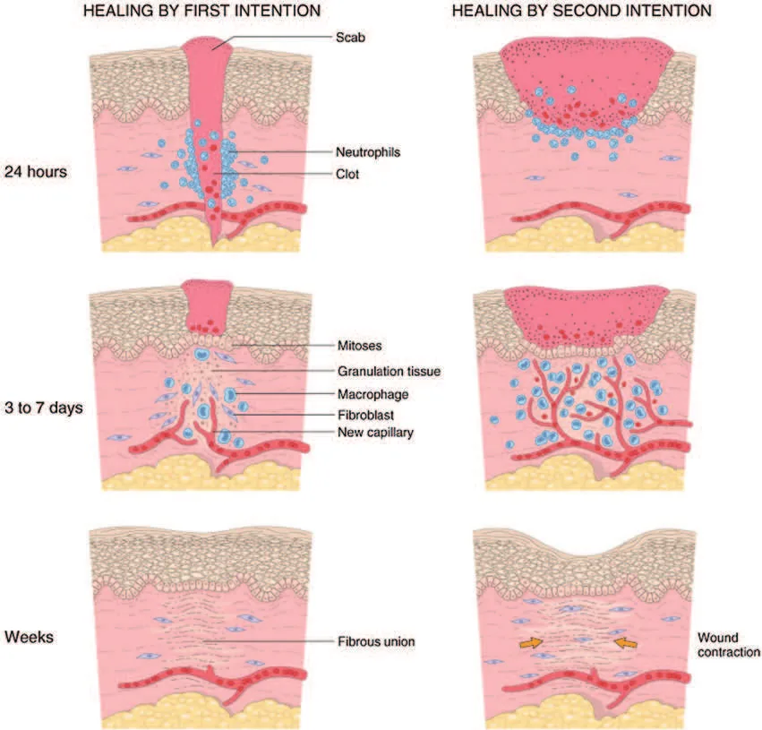
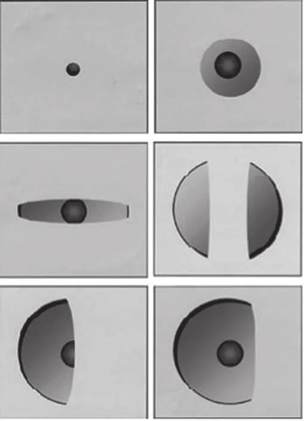

نسخه استخراجشده؛ ترجمه یا تأیید علمی انجام نشده است. وضعیت: captured
ترمیم زخم فرآیندی است که بدن با آن بافت خود را پس از آسیب — از جمله زخم جراحی — بازسازی میکند. و دو مسیر دارد که سرعت، کیفیت و ریسکشان کاملاً متفاوت است.
ترمیم اولیه (primary intention) وقتی رخ میدهد که لبههای زخم نزدیک شده و با بخیه تثبیت شده باشند.
رسیدن به این هدف چهار مزیت مشخص دارد:
• هموستاز
• احتمال کمتر عفونت
• احتمال کمتر نکروز استخوان
• راحتی بیشتر بیمار
مکانیسمش هم روشن است: ترمیم اولیه به حداقل تشکیل کلاژن بافت نرم و بازسازی بافتی نیاز دارد، و همین ناراحتی پس از عمل را کم میکند.
حالا اعدادی که تفاوت را نشان میدهند:
• اپیتلیالیزاسیون: در زخمهای بستهشدهی اولیه ظرف ۲۴ تا ۴۸ ساعت کامل میشود، ولی در ترمیم ثانویه به ۳ تا ۵ روز به تعویق میافتد. همین اعداد در پیگیری به کارت میآیند: با آنها میسنجی ترمیم بیمار طبق برنامه پیش میرود یا عقب مانده.
• لخته: در ترمیم ثانویه، لختهی بزرگتری در ۲۴ ساعت اول در مقایسه با ترمیم اولیه تشکیل میشود.
• روز ۳ تا ۷: در ترمیم ثانویه افزایش التهاب، آنژیوژنز، ماکروفاژها و فیبروبلاستها دیده میشود که نتیجهاش ترمیم کندتر نسبت به مسیر اولیه است.
به این توجه کن: بدن در ترمیم ثانویه کار بیشتری انجام میدهد — لختهی بزرگتر، سلولهای بیشتر، عروق بیشتر — و نتیجهی بدتری میگیرد. تلاش بیشتر همیشه به معنای نتیجهی بهتر نیست.
و افق دور: بلوغ کامل اسکار و استحکام کششی نهایی معمولاً ۱۲ تا ۱۸ ماه طول میکشد. یعنی زخمی که در هفتهی دوم بسته بهنظر میرسد، تا بیش از یک سال هنوز در حال تغییر است.
شرط تشکیل بافت گرانولهی سالم: برای اینکه بافت گرانوله فیبروبلاست بسازد، باید سطح کافی اکسیژن و مواد مغذی در دسترس باشد که از راه عروق خونی تأمین میشود. هر چیزی که خونرسانی را مختل کند، این زنجیره را از ریشه میشکند.

باز شدن خط برش نه یک رخداد، بلکه آغاز یک آبشار است:
«آبشاری از عوارض ممکن است نتیجه شود که با دهیسنس زخم شروع میشود و به نبود اینتگریشن یا شکست پروسیجرهای افزایش بافت سخت و/یا نرم میانجامد.»
یعنی این عارضه خودش هدف نیست؛ دروازه است. هر آنچه پس از آن میآید، از همین یک نقطه شروع شده است.
و یک اعتراف صادقانه: اکثریت جراحان بسیار باتجربهی ایمپلنت تصدیق میکنند یکی از بزرگترین دشواریهایی که در منحنی یادگیری خود با آن روبهرو شدند، حفظ خطوط برش حین و پس از جراحی بوده است.
این جمله را نگه دار. بستن زخم ساده بهنظر میرسد و بههمین دلیل کمتر تمرین میشود — در حالی که باتجربهترینها آن را سختترین بخش میدانند.
و تجربه عدد هم دارد: جراحان کمتجربهتر (کمتر از ۵۰ ایمپلنت کاشته) در مقایسه با جراحان باتجربه ۷٫۳ درصد شکست بیشتر داشتهاند؛ مهارت جراح در عفونت پس از عمل هم نقش روشنی دارد.
طبقهبندی باربوسا. در کاشت دومرحلهای، اکسپوز شدن زودهنگام و خودبهخودی ایمپلنتهای سابمرج پتانسیل عوارضی دارد که میتواند ترمیم و استئواینتگریشن را تحت تأثیر قرار دهد.
چون این اکسپوزهای زودهنگام خودبهخودی میتوانند به موکوزیت یا پریایمپلنتیت بینجامند، طبقهبندی باربوسا بر پایهی روشهای تشخیصی و روشهای درمانی بنا شده است — با هدف پیشگیری یا متوقف کردن (intercept) این عوارض. توصیهی عملیاش هم روشن است: ایمپلنتی که خودبهخود اکسپوز شده، هرچه زودتر با جراحی کامل اکسپوز شود و پس از برداشتن کاور اسکرو، هیلینگ اباتمنت روی آن بنشیند.
به منطق این طبقهبندی دقت کن: بر خلاف طبقهبندیهای صرفاً توصیفی، این یکی مستقیماً به اقدام وصل است.
و وزن بالینی موضوع: عفونتهای زخم جراحی پس از عمل میتوانند تأثیر قابلتوجهی بر سلامت بیمار و بقای ایمپلنت داشته باشند — و پیامدهای مستندشدهی عفونت از افزایش درد و ادم تا مرگ بیمار گستردهاند.
این طیف را جدی بگیر. فاصلهی میان «کمی تورم» و «مرگ» در این جمله، همان چیزی است که پیگیری منظم را الزامی میکند.
